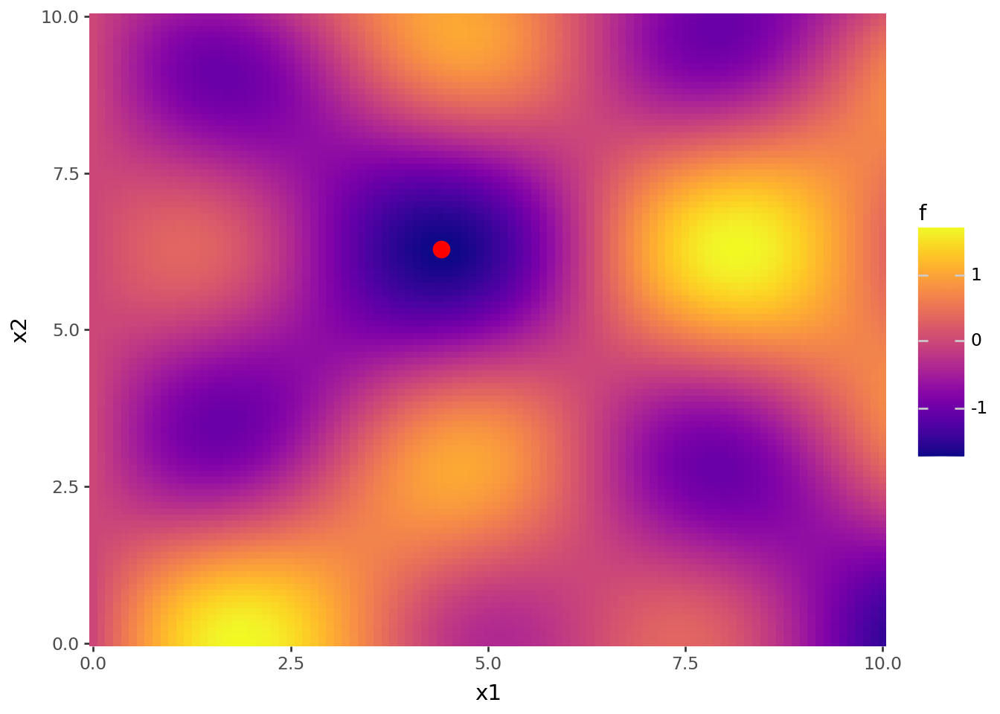

import pandas as pd
import numpy as np
import torch
from plotnine import *
# seed for random number generator
torch.manual_seed(0)<torch._C.Generator at 0x24680770430>import pandas as pd
import numpy as np
import torch
from plotnine import *
# seed for random number generator
torch.manual_seed(0)<torch._C.Generator at 0x24680770430>In PyTorch, a tensor is the fundamental data structure. It can be thought of as a generalization of scalars, vectors, and matrices to any number of dimensions.
A scalar is a single number (0D tensor).
A vector is a 1D tensor.
A matrix is a 2D tensor.
Higher-dimensional tensors can represent more complex data such as images or batches of samples.
Tensors are very similar to NumPy arrays, but with two key advantages:
They integrate smoothly with PyTorch’s automatic differentiation (autograd).
They can run on GPUs, making computations much faster.
# scalar (0D tensor)
x = torch.tensor(1)
print(x)tensor(1)print(x.shape)torch.Size([])# vector (1D tensor)
y = torch.tensor([1, 2])
print(y)tensor([1, 2])print(y.shape)torch.Size([2])# matrix (2D tensor)
z = torch.tensor([[1, 2], [3, 4]])
print(z)tensor([[1, 2],
[3, 4]])print(z.shape)torch.Size([2, 2])For example, here is a 3D tensor containing two 2×2 matrices:
z = torch.tensor([[[1, 2], [3, 4]], [[5, 6], [7, 8]]])
print(z)tensor([[[1, 2],
[3, 4]],
[[5, 6],
[7, 8]]])print(z.shape)torch.Size([2, 2, 2])Just like NumPy arrays, PyTorch tensors support indexing and slicing.
z = torch.tensor([[1, 2, 3], [4, 5, 6]])
print(z)tensor([[1, 2, 3],
[4, 5, 6]])# access the element at row 0, column 1
# (remember indexes start at 0)
print(z[0, 1])tensor(2)# the first row
print(z[0])tensor([1, 2, 3])# get the first column
print(z[:, 0])tensor([1, 4])# get a submatrix (first two rows, last two columns)
print(z[:2, 1:])tensor([[2, 3],
[5, 6]])x = torch.tensor([[[1, 2, 3], [4, 5, 6]], [[7, 8, 9], [10, 11, 12]]])
# access the first "matrix" (index 0 along the first dimension)
print(x[0])tensor([[1, 2, 3],
[4, 5, 6]])# access the second "matrix" (index 1 along the first dimension)
print(x[1])tensor([[ 7, 8, 9],
[10, 11, 12]])# access the element at [0,1,2] (matrix 0, row 1, column 2)
print(x[0, 1, 2])tensor(6)# get the first row of each matrix
print(x[:, 0, :])tensor([[1, 2, 3],
[7, 8, 9]])# get the first column of each matrix
print(x[:, :, 0])tensor([[ 1, 4],
[ 7, 10]])# get all elements from the last two columns of each matrix
print(x[:, :, 1:])tensor([[[ 2, 3],
[ 5, 6]],
[[ 8, 9],
[11, 12]]])Uniform distribution over \([0,1)\)
# vector
torch.rand(3)tensor([0.4963, 0.7682, 0.0885])# batch of 4 tensors with shape (1, 2)
torch.rand((4, 1, 2))tensor([[[0.1320, 0.3074]],
[[0.6341, 0.4901]],
[[0.8964, 0.4556]],
[[0.6323, 0.3489]]])Standard normal distribution \(\mathcal{N}(0,1)\)
torch.randn((4, 1, 2))tensor([[[ 0.2100, 0.9056]],
[[ 0.6035, 0.8110]],
[[-0.0451, 0.8797]],
[[ 1.0482, -0.0445]]])Addition
torch.tensor([1, 2]) + torch.tensor([3, 4])tensor([4, 6])Scalar multiplication
3 * torch.tensor([1, 2])tensor([3, 6])Matrix multiplications
A = torch.tensor([[1, 2], [3, 4]])
B = torch.tensor([[2, 0], [1, 3]])
torch.matmul(A, B)tensor([[ 4, 6],
[10, 12]])Batch Matrix Multiplication
If the first tensor is made of 4 matrices of shape 2×3, and the second tensor is 4 matrices of shape 3×6, then the result will be 4 matrices of shape 2×6:
torch.matmul(torch.rand((4, 2, 3)), torch.rand((4, 3, 6)))tensor([[[0.3000, 0.3429, 0.2284, 0.3586, 0.3673, 0.3617],
[0.5234, 0.4924, 0.4753, 1.0230, 0.8245, 0.5135]],
[[0.4362, 0.1492, 0.0953, 0.2890, 0.2881, 0.2707],
[1.7619, 1.2178, 0.1275, 1.0819, 0.6650, 0.5283]],
[[0.6145, 0.7530, 0.4477, 0.9705, 0.9683, 0.7005],
[0.2107, 0.5395, 0.2411, 0.4634, 0.5121, 0.5085]],
[[1.1831, 0.6440, 1.2960, 1.3538, 0.6235, 0.5808],
[0.9490, 0.5984, 0.9986, 1.1083, 0.6322, 0.4730]]])This example is adapted from Chapter 2: Mathematical Preliminaries of Alice’s Adventures in a Differentiable Wonderland.
Implementing a gradient descent algorithm To become proficient with all three frameworks (NumPy, JAX, PyTorch), I suggest to replicate the exercise below thrice – each variant should only take a few minutes if you know the syntax. Consider a 2D function \(f(\mathbf{x}), \mathbf{x} \sim(2)\), where we take the domain to be \([0, 10]\):
\[ f(\mathbf{x}) = \sin(x_1)\cos(x_2) + \sin(0.5x_1)\cos(0.5x_2) \]
Before proceeding in the book, repeat this for each framework:
Implement the function in a vectorized way, i.e., given a matrix \(\mathbf{X} \sim (n, 2)\) of \(n\) inputs, it should return a vector \(f(\mathbf{X}) \sim (n)\) where \([f(\mathbf{X})]_i = f(\mathbf{X}_i)\).
Implement another function to compute its gradient (hard-coded – we have not touched automatic differentiation yet).
Write a basic gradient descent procedure and visualize the paths taken by the optimization process from multiple starting points.
Try adding a momentum term and visualizing the norm of the gradients, which should converge to zero as the algorithm moves towards a stationary point.
If you are using JAX or PyTorch to solve the exercise, point (3) is a good place to experiment with vmap for vectorizing a function.
Solution
def f(X):
x1 = X[:, 0]; x2 = X[:, 1]
return torch.sin(x1) * torch.cos(x2) + torch.sin(0.5 * x1) * torch.cos(0.5 * x2)
X = torch.rand((4, 2))
print(X)tensor([[0.7366, 0.0204],
[0.2036, 0.3748],
[0.2564, 0.3251],
[0.0902, 0.3936]])f(X)tensor([1.0316, 0.2881, 0.3665, 0.1274])\[ \begin{aligned} \frac{\partial f}{\partial x_1} = \cos(x_1)\cos(x_2) + 0.5\cos(0.5x_1)\cos(0.5x_2) \\ \frac{\partial f}{\partial x_2} = -\sin(x_1)\sin(x_2) -0.5\sin(0.5x_1)\sin(0.5x_2) \end{aligned} \]
\[ \nabla f(\mathbf{X}) = \bigg[\frac{\partial f}{\partial x_1} , \frac{\partial f}{\partial x_2}\bigg] \]
def grad_f(X):
x1 = X[0]; x2 = X[1]
d_x1 = torch.cos(x1) * torch.cos(x2) + 0.5 * torch.cos(0.5 * x1) * torch.cos(0.5 * x2)
d_x2 = -torch.sin(x1) * torch.sin(x2) - 0.5 * torch.sin(0.5 * x1) * torch.sin(0.5 * x2)
return torch.stack((d_x1, d_x2))
grad_f(torch.rand(2))tensor([ 1.2843, -0.1119])def optim(X_0, eta=0.1, nsteps=100):
t = torch.zeros(nsteps + 1, 2)
t[0] = X_0
for i in range(1, nsteps + 1):
g = grad_f(t[i - 1])
t[i] = t[i - 1] - eta * g
return t
torch.manual_seed(0)
path = optim(X_0 = 10 * torch.rand(2), eta = 0.01, nsteps = 10_000)